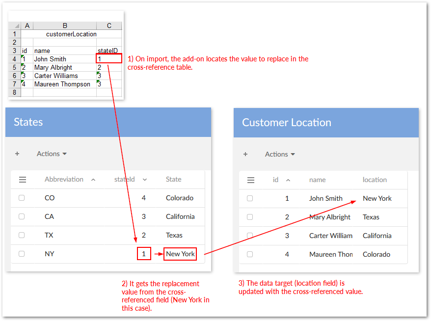
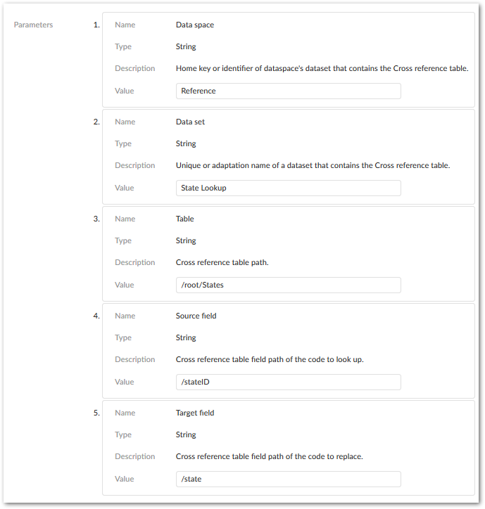

You can use cross-reference transformation functionality to change data values when moving data. For example, a data source field indicating a customer's location might use a numerical identifier. Whereas, the data's target requires the full state name. Using the pairing of id and name in another table, the function can cross-reference the state ids with their full names, and send the replacement value to the target. This is illustrated in the image below:
Cross-reference functionality works with all data types. However, it requires the following when source and target data types differ:
The source field and the field used to lookup the desired value (located in the cross-referenced table) must be the same data type.
The field containing the replacement value (located in the cross-referenced table) and the target field must be the same data type.
The following example assumes the correct data mappings between data source, cross-referenced fields, and data target exist. Also, users must be able to select this functionality using a preference. So, application interface, table, and field preferences need to be created before using the transformation during import or export.
To change data values using a cross-reference transformation:
Start by navigating to Administration > Integration > TIBCO EBX® Data Exchange Add-on > Reference data > Transformation function.
Create a new a new record and input the following:
The name for this configuration.
Select Cross reference from the Java class drop-down menu and save, but do not close the record.
Enter the parameter values to point to the correct fields to cross reference. The following image shows the paths used for the example described at the outset of this section:

Save and close the record.
Locate the field mapping to which you want to apply this transformation and under the Field mapping transformation tab, create a new record.
Use the Transformation function drop-down menu to select the function you just created. If needed, you can also edit the parameters from this screen. Remember that the transformation function will only be applied if (during import, export. transfer) users select the preference that includes the correct field mapping.